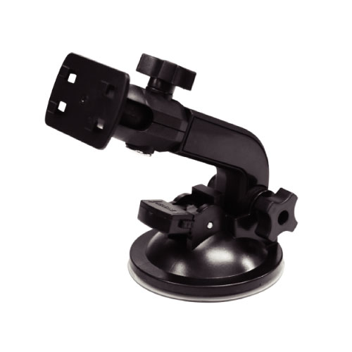
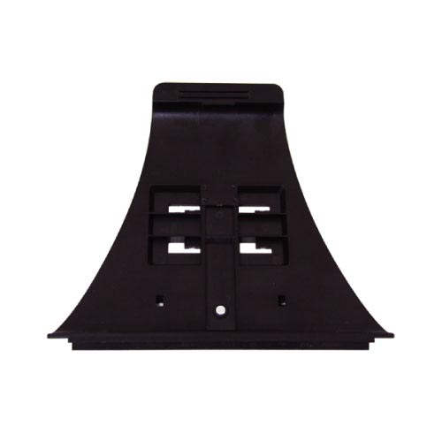
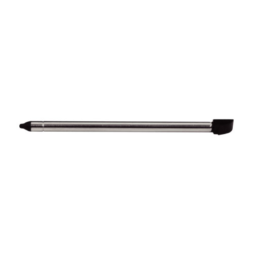

<?php
	define("title", "DNC-075R");
	require_once '../../../header.php';
?>
<div class="container" id="wrap">
	<section id="">
		<nav aria-label="breadcrumb" role="navigation" class="bg-light">
			<ol class="breadcrumb">
				<li class="breadcrumb-item"><a href="../../../index.html">ホーム</a></li>
				<li class="breadcrumb-item"><a href="../index.html">カーナビゲーション</a></li>
				<li class="breadcrumb-item"><a href="../DNC-075R">DNC-075R</a></li>
				<li class="breadcrumb-item active" aria-current="page">オプション</li>
			</ol>
		</nav>
		<p class="">DIANAVI DNC-075R オプション</p>
		<h3 class="mb-4 mt-3 pb-2 border-bottom"><strong>同梱オプション</strong></h3>
		<div class="row mb-5">
			<div class="col-lg-3 col-md-4 col-sm-6">
				<div class="option mb-4">
                	
                	<div class="card-body-option">
	                  	<p class="card-title">専用取付スタンド</p>
						<p class="card-text">3,500円（税抜）</p>
						<p class="card-text">本体に取り付けて、ダッシュボードに設置します。</p>
					</div>
				</div>
        	</div>
			<?php require_once '../option/op-fd7-non.html'; ?>
        	<div class="col-lg-3 col-md-4 col-sm-6">
				<div class="option mb-4">
                	
                	<div class="card-body-option">
	                  	<p class="card-title">専用ホルダー</p>
						<p class="card-text">1,000円（税抜）</p>
						<p class="card-text">ナビ本体に取り付けます。</p>
					</div>
				</div>
        	</div>
        	<div class="col-lg-3 col-md-4 col-sm-6">
				<div class="option mb-4">
                	
                	<div class="card-body-option">
	                  	<p class="card-title">タッチペン</p>
						<p class="card-text">800円（税抜）</p>
						<p class="card-text">ナビ本体の画面操作ができます。</p>
					</div>
				</div>
        	</div>
			<?php
				require_once '../option/cc-2013-non.html';
				require_once '../option/en-015n-non.html';
				require_once '../option/mapmanual-non.html';
				require_once '../option/hardmanual-non.html';
			?>
		</div>
		<?php require_once '../option/caution.html'; ?>
	</section>
</div>
<?php require_once '../../../footer.php'; ?>